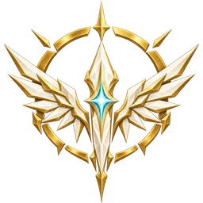

PRE-ALPHA DEVELOPMENT / OPENRA ENGINE / WINDOWS PROTOTYPE · NO RELEASE YET
03Major factions
09Subfactions
63Roster entries to explore
01 / THE FALL
One mineral. Three destinies.
VEILGLASS · CONDENSED CREATION ENERGY
Veilglass
When the boundaries between Heaven, Earth and Hell shattered, raw creation-energy crystallised at the scars. Now this volatile substance determines the fate of all three realms.
✦
Angels purify it
To sustain celestial war engines and divine shields.
▣
Humans refine it
To fuel factories, artillery and the final resistance.
♜
Demons corrupt it
To open infernal gates and breed horrors.
Classic C&C gameplay: base building · harvesters · refineries · superweapons · large armies
02 / THE COMBATANTS
There are no innocent armies.
Three parent factions, nine subfactions. Explore their developing doctrines, shared foundations and exclusive units.

01 / THE CELESTIAL HOST
ANGELS
The shining sword of Heaven. Precious, devastating, mercilessly precise.
ELITE UNITSAIR SUPERIORITYDIVINE SHIELDS
Orders
Seraphic Synod
Order of the Gate
The Unshackled
Vulnerability: expensive losses and slow reinforcements.
Buildings and logistics units use original game artwork. Combat illustrations are concepts; eight-direction artwork is available in the unit artwork gallery, with animation and game integration still ahead.
03 / THE CAMPAIGN CHRONICLES
Three truths. Seventy-five battles.
Play through the Apocalypse from the perspective of humanity, Heaven or Hell in three planned campaigns of 25 missions. Each of the five acts reveals a different side of the same war, culminating in six possible endings.
From the first evacuation of Crown Vale to the trial of the Witness Ledger and the three-way siege of the Harrow of Dawn, every mission has a battlefield, victory conditions, optional objectives, and a story consequence. The campaign scenarios are narrative designs and are not yet playable in the current prototype.
Public milestones and GitHub issues. No completed boxes without verification.
00
Engine foundation Integrated
Pinned OpenRA engine, Windows build and launch tools, nine faction choices, rules validation and a visible software cursor.
01
First playable skirmish In testing
Prototype economy, production, combat and land AI are integrated. Three new Lua mission previews are in source. Full-match, multiplayer and all-faction runtime acceptance tests remain in progress.
02
Asymmetric warfare
Heavenly shields, human combined arms, demonic corruption and distinct subfaction tech.
03
World and presentation
39 original building designs, faction MCVs and harvesters, Veilglass artwork and an illustrated field guide. Combat sprites, animation, damage frames and audio are next.
04
Three campaigns and release
Seventy-five narrative missions planned; H03, A03 and D02 scripted previews integrated. Live mission completion, progression, packaging and releases are still pending.
Source code is not the same as a playable release. Each downloadable build will be clearly marked and tested.
CURRENT STATUS · 0.3 DEV CANDIDATE · NO RELEASEAll releases ↗
No playable build has been released.
The 0.3 source candidate passes Windows engine build and lint checks and now includes three scripted mission previews. No full match or playable campaign release has been verified. Build it locally to test the skirmish and mission scenarios.